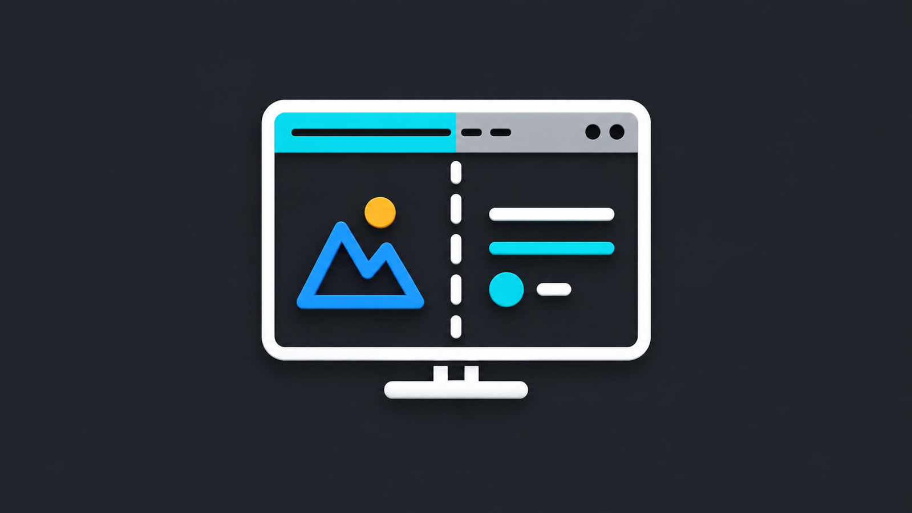

Photo and video frame
Show a shuffled local view of media exposed through a DLNA server.
Device software
KioskFrame turns a lightweight Linux machine into a dependable display appliance: a DLNA-backed photo frame, a calendar dashboard and one full-screen kiosk shell.

Show a shuffled local view of media exposed through a DLNA server.
Bring calendars and tasks into a MagicMirror-style view.
Launch a full-screen Chromium view on boot and switch deliberately between frame and dashboard.